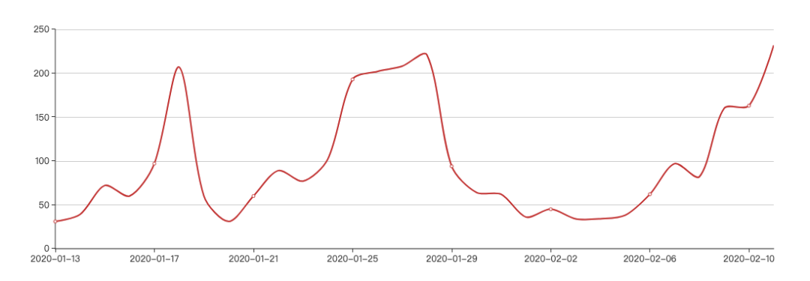
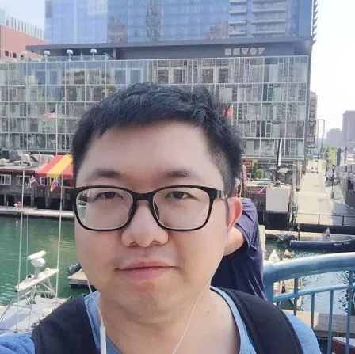

“啥都停了”雾霾咋还这么重？原来如此

占秋冬季排放三分之二以上的采暖和工业产生的污染物没有下降，叠加极为不利的气候条件，形成重度雾霾
***韩舒淋 徐沛宇 |文***
***马克 | 编辑***

春节假期叠加疫情影响，北京复工企业不多，人流稀少，交通通畅，但雾霾却依然严重。
2月9日至今连续四天，北京空气质量都是中度污染以上，最近两日更是重度污染，生态环境部的实时统计数据显示，截止2月12日下午六点，北京空气质量指数依然高达255。
工厂停了，车流少了，工地没有施工，雾霾却依然发生。不仅刚开始复工这几日空气质量恶劣，数据显示，此前假期期间，北京市也曾在1月25日至28日连续四天出现中重度污染。

最近30天北京空气质量指数变化趋势 资料来源：生态环境部数据中心
不仅北京，整个京津冀及周边地区都是如此。雾霾究竟从何而来？
2月11日，生态环境部发布文章对近日京津冀及周边地区空气重污染进行了集中解答。总的来看，雾霾的形成原因，一方面和排放有关，一方面和大气环境容量有关，当排放超过了大气环境容量，就会出现空气污染。尽管假期和疫情影响下，排放确实有所下降，但秋冬季主要的排放来源——工业和采暖——造成的污染并没有实质性下降，叠加气象条件不利，风速低、湿度高、逆温高，污染物难以扩散，两方面因素综合导致雾霾重现。
对于未来北京空气质量，环保部发布的预测表示，13日夜间受冷高压作用，空气质量逐渐转好，全天仍然在5级重度污染。14-18日扩散条件较好，空气质量优良。19-20日扩散形势转差，预计空气质量在轻度污染水平左右。21日受中高空冷槽影响，空气质量逐渐转好。
排放减少有限
虽然社会活动减少导致排放有所下降，但其实污染主力并未退场。
工程院院士、清华大学环境学院院长贺克斌表示，施工工地、车流、餐饮、劳动密集型轻工业确实大部分停工，这类企业排放大幅度降低，检测数据上，2020年除夕至正月十五，区域PM10平均浓度较2019年春节同期下降13.3%，NO2下降22.6%。
但采暖、资源型工业产生的排放没有明显变化。采暖方面，贺克斌介绍，大量务工人员返乡，尽管部分农村完成了煤改气，但仍有1000多万户用煤取暖，今年春节与去年同时段相比，农村地区衡量燃煤量的CO浓度增加了10%以上。
工业方面，贺克斌表示，目前停工的主要集中在加工业、轻重业，工业大气污染物排放的主要来源，主要是高污染、高能耗的资源型行业，比如火力发电、钢铁、焦化、玻璃、耐火材料、石化化工、氧化铝、电解铝等，这些行业往往存在不可中断的生产工序，需要常年运转。
相关排放重头的行业数据也显示其并未受到假期影响，贺克斌介绍，从污染物在线监测数据看，初一到十五期间，火力和钢铁行业污染物排放量较节前下降约10%左右，焦化、石化、玻璃、有色等行业无明显变化趋势。
基于此，贺克斌表示，在京津冀及周边地区，秋冬季占比高达三分之二的工业和采暖所排放的大气污染物并未实质性下降，而这些排放源也是这个区域的基础排放量，大气污染排放量并未“伤筋动骨”，当气象条件不利导致环境容量下降时，基础排放量未变就会超出环境容量并出现重污染过程。
城市雾霾的另一大成因是机动车尾气排放，假期和疫情影响下，交通流量维持低位，但随着逐渐复工，对气候的影响已不可忽视。
交通运输部规划研究院环境所所长徐洪磊介绍，春节期间，京津冀及周边地区,公路货车和客车流量较平时分别下降了77%和39%。而且受疫情影响，春节假期后，区域交通流量仍维持相对较低水平,粗略估算，区域内交通运输产生的污染排放量至少下降4成以上。从生态环境部监测站点数据分析，京津冀及周边“2+26”城市自春节到正月十五日，NO2浓度同比下降30%左右。
复工后，尽管市内交通并不拥堵，但交通影响已经不可忽略。徐洪磊介绍，2月10日和11日，随着复工复产，城市内和城际间的交通流量又开始有明显增加，NO2浓度同前段时间相比明显上升，北京市PM2.5组分监测显示硝酸盐占比大幅上升，成为抬升PM2.5浓度的主要因子。这说明机动车排放的NOx（氮氧化物）仍是区域大气污染的主要成因之一。
气候条件不利
排放下降有限的同时，不利的气候条件也加剧了雾霾的产生。
据中科院大气物理所研究员王自发介绍，今年春节以来，受假期和疫情影响，“2+26”城市PM2.5、SO2、NOx、VOCs等主要污染物排放量较秋冬季平均水平下降约20-30%。
但同时，区域内频繁出现长时间静稳、强逆温、高湿的不利气象条件，平均风速整体低于2米/秒，相对湿度高于60%，逆温高达10度，边界层高度降低到300-500米（是正常情况下的1/2至1/3），京津冀中部、河南中部、山东西部等地多次出现大雾天气，这导致区域大气环境容量比平时减少约50%。
逆温是影响污染物扩散的关键因素之一，正常情况下，海拔高度越高，温度越低，空气自暖向冷流动，有助于污染物垂直扩散。但在发生逆温时，情况刚好相反，高空温度比地面高，空气垂直上升受阻，就像锅盖一样盖在区域上空，污染物难以扩散。10度逆温属于强逆温。
王自发解释说，污染排放量下降了，但下降幅度远未达到环境容量，虽然社会活动处于较低水平，但污染物排放量仍然超过环境容量2倍以上。
此外，北京此次雾霾还有明显的输入特征。王自发介绍，京津冀及周边“2+26”城市处于相同的大气流场中，有时这些城市同步处于不利的气象条件下，有时则发生在局部，叫做“气象辐合”，污染物会向辐合中心积聚。今年春节以来，北京和天津等周边城市就发生了气象辐合，出现了重污染，而河南、山东等省份的城市空气质量却持续优良。
贺克斌表示，在目前“2+26”城市排放强度下，虽然总排放量有所降低，但大部分城市排放的污染物向少数几个城市积聚，使这几个城市的大气污染物承载量远超环境容量，就会发生重污染，北京、天津等城市目前就是这种状况。从监测数据分析，北京市二氧化硫浓度是前几天的三倍以上，拉升PM2.5浓度的主要是硫酸盐和硝酸盐，说明外界传输影响还是很大的。
绿色和平气候与能源资深项目主任刘茜也对《财经》记者表示，当工业活动和人为活动造成的污染排放导致大气污染物承载量远超环境容量时，就会造成空气污染。而在高湿度、低气压、强逆温的静稳天气状态下，空气污染又会因为难以消散而导致污染强度的增加和污染时长的延长。
对于这种社会直观认知和实际污染现象的反差，中国环境科学研究院研究员岳欣对《财经》记者表示，从科普宣传上讲，人民群众并没有充分认识到气象条件对大气污染过程的影响程度，其影响实际上远远超过普通人的直观感觉，例如逆温层的出现，有可能将正常情况下的污染物浓度提高数倍，造成重污染；污染物排放量十分巨大，也远超人们的想象，简单地感觉交通量小了、部分行业企业放假减产、停产了，但仍有大量我们不直接接触、了解较少的行业企业在排放大量污染物。气象不利和污染物排放仍然十分巨大，形成重污染过程就不足为奇了。
刘茜对《财经》记者建议，想要彻底改善空气质量，进一步减少空气污染发生频率并降低空气污染程度，需要进一步加速产业结构调整和能源结构调整。更多的清洁电力的使用，以及高排污行业的排放标准不断提高和监督落地，将对京津冀地区甚至全国的空气质量改善起到至关重要的作用。
对于此次污染，贺克斌将其特点总结为：影响范围变小、积累时间变长、持续时间变短、峰值浓度变低、污染程度变轻。在他看来，此次污染过程与2016年11月23-27日污染过程相似，按当时排放水平，可能爆表城市更多。针对此，他也建议京津冀及周边地区各城市要有一盘棋思想，未来必须坚持联防联控联治，持之以恒的开展能源结构、产业结构、交通结构、用地结构的调整，强化污染排放控制，大幅削减大气污染排放强度，不断改善环境空气质量。
作者为《财经》记者
欢迎交流

韩舒淋
微信：frodo_7
徐沛宇
微信：xupeiyu1226
加微信请注明：姓名、公司、职务


责编 | 黄端 duanhuang@caijing.com.cn